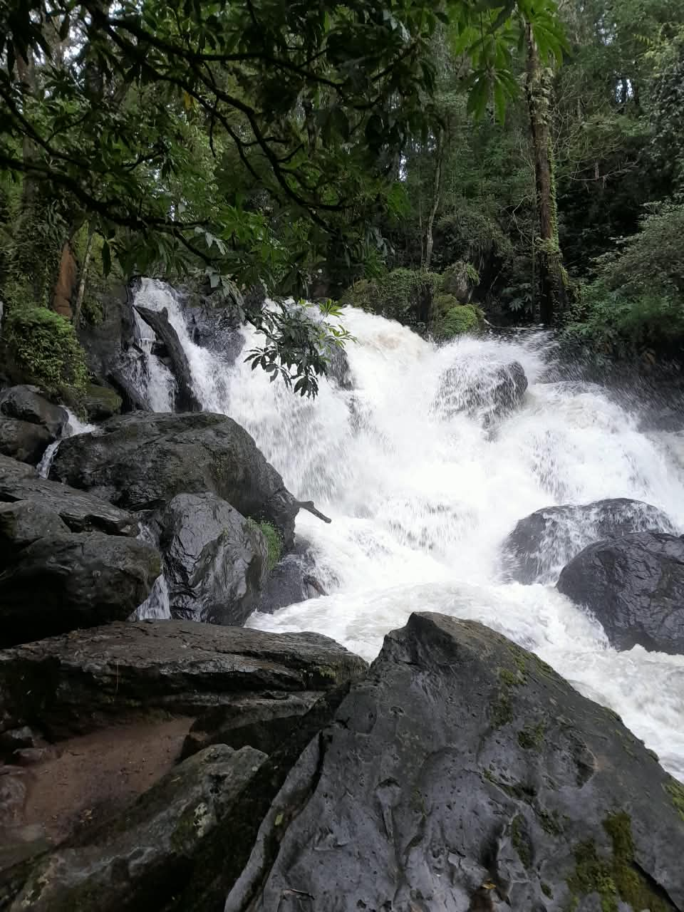

¿Qué es? Es una cascada pequeña y tranquila de unos 12-15 metros de altura que forma el Río El Molino, también la conocen como Cascada Avándaro.
No es tan alta como Velo de Novia, pero tiene varias pozitas naturales de agua cristalina donde te puedes meter.¿Dónde está? En Avándaro, a 4 km del centro de Valle de Bravo.
La dirección exacta es Ruta del Bosque 112, Avándaro, 51200 Valle de Bravo. Coordenadas 19.172647, -100.118432.La encuentras primero que Velo de Novia si vas por el camino al Molino Viejo instagram, comexpedi, mxHistoria: Ahí había un molino viejo de trigo del siglo XIX que usaba la fuerza del agua para moler, por eso le pusieron El Molino. Quedan ruinas del molino cerca. Era parte de la hacienda de Avándaro.

En el siglo XIX había una hacienda llamada El Molino Viejo. Usaban la caída del agua para mover una rueda hidráulica que molía trigo para todo Valle.
Cuando hicieron la presa Miguel Alemán en 1947 y cambiaron los ríos, el molino dejó de funcionar y quedaron ruinas de piedra. Por eso todavía ves paredes viejas al lado del sendero. No es una hacienda colonial grande, era un molino de trabajo.
FLORA Y FAUNA ALREDEDOR:Flora: Bosque de pino-encino, oyamel, madroño. Mucho musgo, helecho gigante y orquídeas chiquitas pegadas a las rocas húmedas.
Hay árboles de más de 700 años en la zona de El Pino.Fauna: Ves colibríes, carpintero, ardillas, cacomixtles de noche y truchas pequeñas en las pozas. En 2024 se hizo viral porque encontraron un tigre muerto en la cascada, lo que puso en alerta a Profepa porque no debe haber fauna exótica ahí.